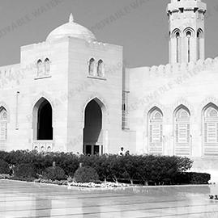

In or about the year 570 the child who would be named Muhammad and who would become the Prophet of one of the world's great religions, Islam, was born into a family belonging to a clan of Quraysh, the ruling tribe of Mecca, a city in the Hijaz region of northwestern Arabia.
Originally the site of the Ka'bah, a shrine of ancient origins, Mecca had with the decline of southern Arabia become an important center of sixth-century trade with such powers as the Sassanians, Byzantines, and Ethiopians. As a result the city was dominated by powerful merchant families among whom the men of Quraysh were preeminent.
Islamic public place of prayer. The masjid jami', or “congregational mosque,” is the centre of community worship and the site of Friday prayer services. Though the mosque-originally a sacred plot of ground-has been influenced by local architectural styles, the building has remained essentially an open space, usually roofed, with a minaret sometimes attached. Statues and pictures are not permitted as decoration. The minbar, a seat at the top of steps placed at the right of the mihrab, is used by the preacher (khatib) as a pulpit.
Occasionally there is also a maqsurah, a box or wooden screen originally used to shield a worshiping ruler from assassins. The minaret, originally any elevated place but now usually a tower, is used by the muezzin (crier) to proclaim the call to worship five times each day. During prayer, Muslims orient themselves toward the qiblah wall, which is invariably oriented toward the Ka'bah in Mecca. The mosque has traditionally been the centre of social, political, and educational life in Islamic societies.

When entering the mosque, a person should take off his shoes or sandals. Entering the mosque shall be done with the right foot first, while one utters blessings to Muhammad and his family. Once inside the mosque, two rak'a (part of the salat) shall be performed.
A person inside the mosque shall talk softly, not loudly, so that he or she does not disturb people praying. For the Friday prayer, nice clothes and perfumes are recommended.